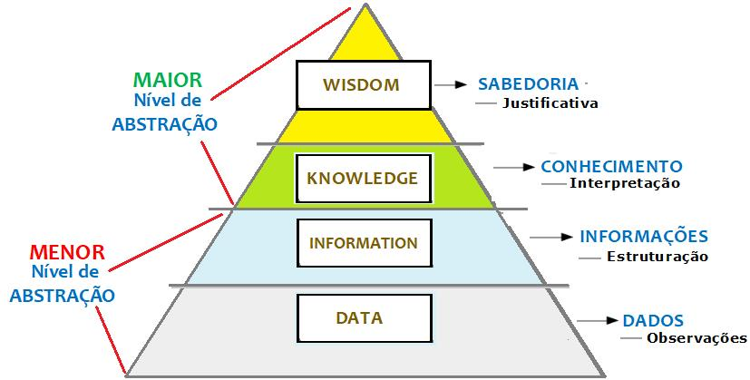

Banco de Dados: Introdução
Quando falamos em computadores e softwares, somos inevitavelmente remetidos a dados digitais. Praticamente todos os serviços que utilizamos, de alguma forma, dependem de dados para operar. Tais dados representam entradas e saídas e, boa parte do tempo, precisam estar armazenados de forma persistente. Mas afinal, você sabe como estes dados são armazenados? Será que na história da computação, o armazenamento de dados sempre foi imprescindível? E, para não esquecer, o que entendemos como dados?
Para responder a estas e outras perguntas, siga comigo nos próximos capítulos desta jornada!
Dados, Metadados e Informação¶
Os dados cada vez mais os dados fazem parte da vida cotidiana. Nas diferentes atividades que realizamos, consumimos e produzimos dados de forma nunca vista antes. Enquanto sociedade, as Tecnologias da Informação e Comunicação potencializaram nossas capacidades de gerar e transferir signos.
Mesmo nosso dia-a-dia estando imerso em dados, a definição do termo e sua relação com informação e conhecimento precisa ser bem compreendida, principalmente para profissionais da área de tecnologia. Comecemos pelos dados:
Dados (data, no inglês) refere-se a fatos conhecidos que podem ser registrados e que possuem significado implícito 1. Já na definição do DMBOK, dados são representações de fatos sobre o mundo e, no contexto de Tecnologia da Informação, são informações armazenadas em formato digital2.
Dados não estão disponíveis naturalmente: eles precisam ser criados. São meios de representação e seu significado extrapola a si próprio. Compreende tanto a interpretação dos objetos que representa quanto um objeto que precisa ser interpretado2.
Neste ponto é importante também diferenciarmos o termo dados de metadados. Quando você encontrar a palavra dados, estamos nos referindo a um meio de representação de fatos do mundo em formato digital. E para interpretá-los precisamos de um contexto, um sistema de representação dos dados, ao que chamamos de metadados. Ou seja, o significado implícito dos dados torna-se evidente a partir de um contexto e este contexto é expresso pelos metadados, que atuam como convenções para interpretação dos dados 2.
Isso nos permite entender que um mesmo conceito do mundo (fato) pode ser representado de diferentes formas em dados, de modo mais ou menos detalhado. A interpretação, contudo, deve manter-se alinhada ao significado real, independendo da representação.
Vamos imaginar o número 14084218014. Você saberia o que ele representa? Sem um contexto, possivelmente não. Agora se eu disser que estamos falando do CPF de pacientes internados em determinado hospital? Bem, agora você reconhece o significado do número 14084218014 (nosso dado) a partir dos metadados que fornecemos.
Os dados representam a base da pirâmide. Acima deles encontramos a informação, conhecimento e a sabedoria, tal qual a imagem a seguir ilustra. Contudo, tal representação desconsidera que a própria produção de dados requer conhecimento e que não existem fronteiras claras entre dados e informações, por exemplo. Informação, em determinados contextos, também pode ser entendida como dado.
 Autor: Luiz Roberto. Disponível em https://professorluizroberto.com/wp-content/uploads/2021/03/Piramide-DICS-7-min.jpg.
Banco de Dados¶
Sabemos que o computador é fruto da indústria de guerra e que seus primeiros usos foram para fins militares. Nesse período, em que os fundamentos da computação estavam sendo construídos, os programas desenvolvidos tinham como principal objetivo a execução de cálculos complexos. Não haviam interfaces gráficas, sequer telas, para exibir os resultados. No caso do ENIAC, primeiro computador digital eletrônico, a resposta era gerada a partir de uma sequência de lâmpadas.
Na medida que a tecnologia evoluiu, os computadores receberam novas tarefas, passando a ser utilizados em universidades, indústrias, prestação de serviços e, é claro, em nossos lares. E, com a ampliação significativa de uso, novos softwares foram desenvolvidos, potencializando a necessidade armazenamento de dados digitais.
Partimos então de um contexto onde os dados processados pelos softwares eram inputados a cada execução por operadores humanos e cuja resposta final servia ao momento ( não sendo armazenada digitalmente para usos posteriores), para um cenário onde os dados digitais representam ativos de imenso valor para indivíduos e organizações. É neste ponto da história que nos encontramos hoje.
Os fatores que nos levaram a esta revolução digital podem ser resumidos a três: demanda por informação, hardware de armazenamento com grande capacidade e baixo custo e o desenvolvimento de sistemas gerenciadores de banco de dados (SGBD), que são o tema do nosso estudo.
Os SGBDs mantém sob sua guarda diversas bases de dados (databases) pelo tempo que for necessário. Cada database corresponde a um conjunto de dados logicamente organizado, disponível para consultas e atualizações de uma comunidade de usuários interessados.
É importante ressaltar que sempre que houver a coleta organizada e sistemática de dados para um determinado propósito, teremos um banco de dados. Logo, um banco de dados pode ser alimentado de forma automática ou manual e os dados podem ser mantidos em qualquer formato (papel, fitas, ..., ou arquivos digitais). Seja qual for o meio, todo banco de dados representa um aspecto do mundo real, reduzido às propriedades de interesse (minimundo ou universo de discurso). Todas as mudanças que ocorrem no minimundo devem ser refletidas no banco de dados e o banco de dados deve ser um espelho da realidade1. Contudo, para a área de estudo em Banco de Dados da Ciência da Computação e afins nos concentramos com os bancos de dados mantidos por sistemas computadorizados, cujos dados são representados de forma digital.
Sabemos que o sistema de arquivos funciona muito bem para armazenar e recuperar dados digitais. Qual seria o motivo, então, para utilizarmos SGBDs quando tratamos de bases de dados? Segundo Garcia-Molina et al (2008), alguns elementos que justificam escolhar um SGBD seriam3:
- Permitir que usuários criem novas bases e manipulem seus
schemaspor meio de uma linguagem específica de definição de dados; - Permitir que usuários consultem e modifiquem dados por meio de uma linguagem específica de manipulação de dados;
- Suportar o armazenamento de grandes volumes de dados por longo tempo, sempre mantendo a eficiência em seu acesso;
- Garantir a durabilidade, garantindo que falhas e eventos inesperados não comprometam os dados;
- Garantir o isolamento e a atomicidade na manipulação dos dados.
Nota
Schema refere-se a representação da estrutura e organização de uma base de dados a partir de uma linguagem formal. São sentenças que impõem restrições de integridade aos dados. Pode associar-se ao nível lógico ou ao físico no projeto de bases de dados.
Nota
Conceitos como linguagem de definição de dados, linguagem de manipulação de dados, durabilidade, atomicidade e isolamento serão aprofundados posteriormente.
Perceba que sistemas de arquivos não dispõem de linguagens de consulta e manipulação de dados, tampouco permitem definir o schema dos dados de maneira aprimorada. Questões como isolamento e atomicidade não são plenamente atendidas, bem como a durabilidade em seu sentido mais estrito. Há também a questão do acesso pouco eficiente a dados cuja localização é desconhecida.
Para facilitara compreensão das diferenças entre SGBD e sistema de arquivos, devemos ter em mente que o cenário de uso deve considerar dados compostos por pequenos fragmentos constantemente atualizados e consultados. Em tal situação, o uso do sistema de arquivos em detrimento de um SGBD pode ocasionar alguns efeitos indesejados. Vejamos os principais deles:
Redundância e Inconsistência¶
Redundância ocorre quando uma mesma informação é representada diversas vezes na base de dados. Imagine, por exemplo, os dados de seu endereço "espalhados" em diversas cópias no site de e-commerce que você costuma fazer compras. Seria um caso de redundância.
Ter dados redundantes não implica, necessariamente, em problemas. É só pensar na recomendação que ouvimos a todo o momento: "Faça cópias de segurança de seus arquivos!". Redundância é o fundamento do backup, e fazer backup é bom 😀.
O problema com dados redundantes está na sua gestão. Se existem cópias de uma mesma informação, é preciso mantê-las sob controle, de modo que todas representem o mesmo fato do mundo. Ou seja, precisamos manter sincronizadas as diferentes cópias existentes.
Inconsistência
Dados similares encontram-se representados em diferentes formatos e locais distintos. Torna-se necessário deduzir qual representação é a correta (ou mais completa) em relação ao fato.
Redundância
Um mesmo fato do mundo encontra-se representado múltiplas vezes no banco de dados. Divide-se em:
- Redundância controlada: O software está ciente das diversas cópias da mesma informação e mantém a sincronia entre tais cópias.
- Redundância não controlada: O software está não está ciente das diferentes cópias existentes. A sincronização fica a cargo do usuário. A redundância não controlada predispõe a inconsistência, visto que gera anomalias na manipulação dos dados.
Pense comigo: se no site de e-commerce haviam diferentes cópias de seu endereço, mas apenas uma delas está correta, quais problemas poderiam ocorrer?
Dificuldade de Acesso¶
Para um software que não utiliza SGBD, ficando restrito ao sistema de arquivos, a disponibilização de novas consultas depende de manutenção no software, o que tende aumentar custos e a possibilidade de injetar defeitos.
Isso ocorre porque o acesso aos dados requer conhecimento detalhado da estrutura física de armazenamento dos mesmos. Além disso, compartilhar estes dados com outros softwares torna-se custoso e inseguro pois o novo usuário deverá implementar o mesmo conjunto de regras do software "dono" da base de dados para garantir consistência na manipulação.
Outro fator que implica complexidade é a natureza fragmentada da base de dados. Se ela for composta de múltiplos arquivos, o software precisará "conhecer" todos eles em detalhes. Logo, não há uma camada de abstração entre software e base de dados, mas uma ligação física extremamente engessada e codependente.
Problemas de Integridade¶
Dificuldades de Compartilhamento¶
Problemas de Atomicidade¶
Problemas de Isolamento¶
Problemas de Segurança¶
-
R. Elmasri and S. Navathe. Fundamentals of Database Systems. Addison-Wesley, 2011. ISBN 9780136086208. URL: https://books.google.com.br/books?id=ZdhAQgAACAAJ. ↩↩
-
Dama International, Data Management Association, D. Henderson, and S. Earley. DAMA-DMBOK: Data Management Body of Knowledge. Technics Publications, 2017. ISBN 9781634622349. URL: https://books.google.com.br/books?id=YjacswEACAAJ. ↩↩↩
-
H. Garcia-Molina, J.D. Ullman, and J. Widom. Database Systems: The Complete Book. Pearson international edition. Pearson Prentice Hall, 2009. ISBN 9780131873254. URL: https://books.google.com.br/books?id=pk5GAQAAIAAJ. ↩